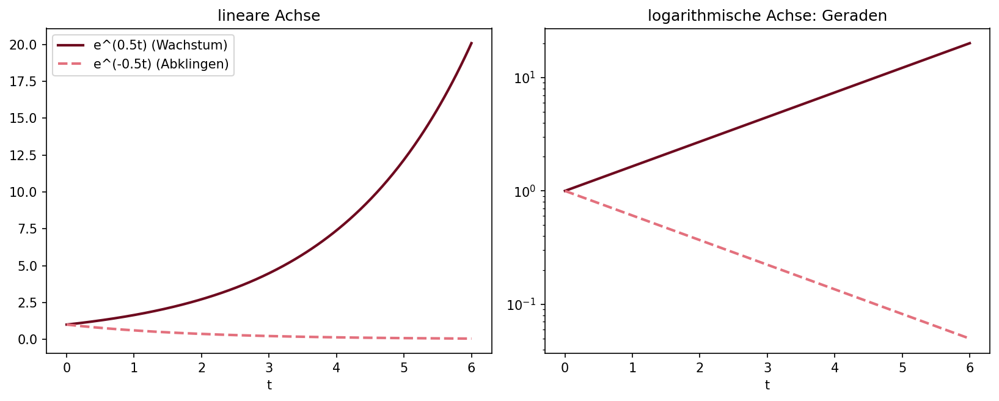
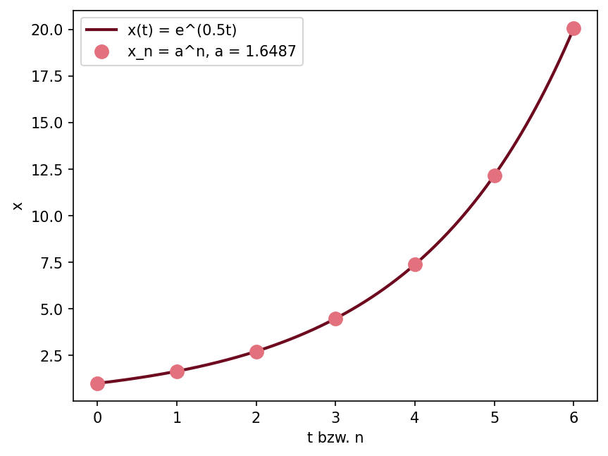
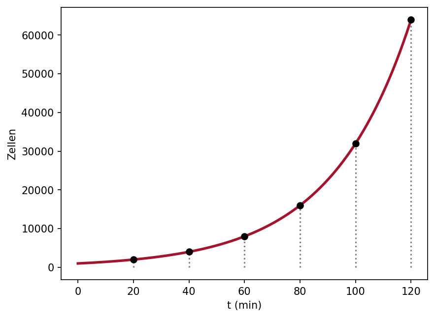
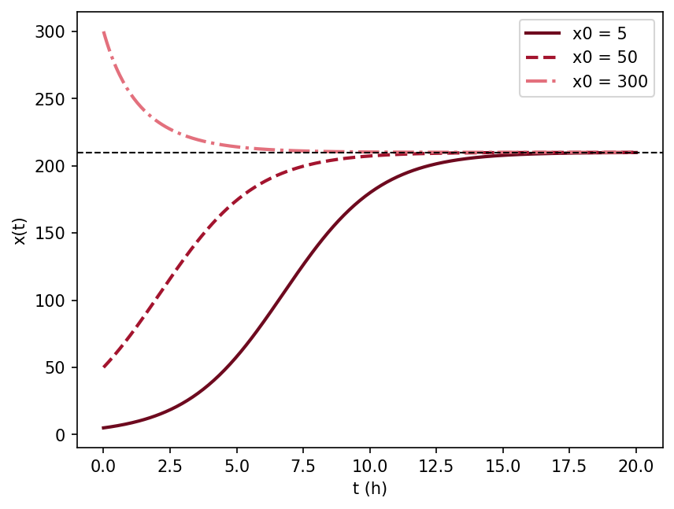
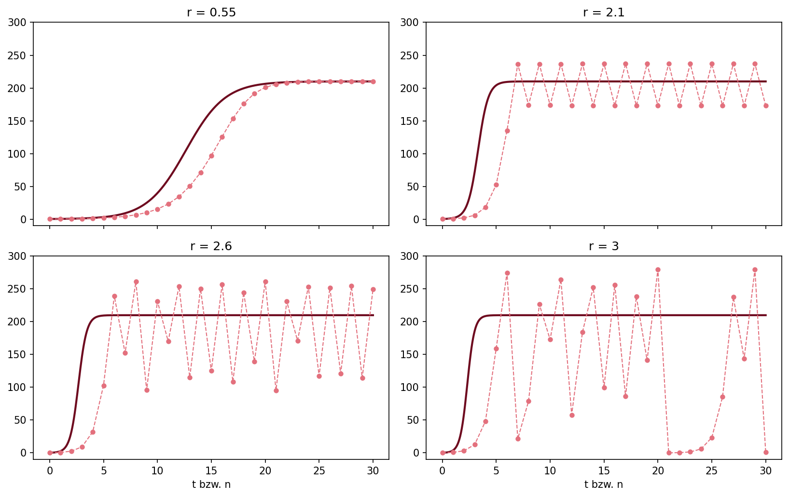

Kapitel 3 · Kontinuierliche dynamische Systeme mit einer Variablen
3.2Exponentielles und logistisches Wachstum
dx/dt = r x ist das einfachste Wachstumsmodell: Die Änderungsrate ist proportional zur Größe selbst, die Lösung x(t) = x0 ert wächst oder klingt exponentiell ab. Begrenzte Ressourcen führen auf das logistische Modell dx/dt = r (1 − x/K) x, dessen Lösungen sich der Kapazität K nähern.
Zu jeder Abbildung des Abschnitts finden Sie das Programm, das sie erzeugt. Ändern Sie Parameter und Startwerte und beobachten Sie, was passiert. Abbildungs- und Gleichungsnummern beziehen sich auf das Buch.
Abb. 3.8
Exponentielles Wachstum und Abklingen
x(t) = e0.5t bzw. x(t) = e−0.5t
In logarithmischer Darstellung werden beide Kurven zu Geraden. Verdopplungszeit und Halbwertszeit sind gleich ln(2)/0.5 ≈ 1.39.

# Abb. 3.8: exponentielles Wachstum und Abklingen (Buch, Abschnitt 3.2, Gl. 3.15 und 3.16)
# x(t) = e^(0.5 t) und x(t) = e^(-0.5 t); links lineare, rechts logarithmische Achse (dort werden beide zu Geraden)
# (c) 2026 Philipp Kügler · Programm zum Buch „Dynamische Systeme in den Lebenswissenschaften“ · MIT-Lizenz (siehe LICENSE)
using Printf, Plots
t = range(0, 6, length = 300)
bilder = []
for (achse, titel) in [(:identity, "lineare Achse"), (:log10, "logarithmische Achse: Geraden")]
p = plot(t, exp.(0.5 .* t), yscale = achse, color = RGB(0.43, 0.04, 0.12), lw = 2, label = "e^(0.5t) (Wachstum)", title = titel, xlabel = "t")
plot!(p, t, exp.(-0.5 .* t), ls = :dash, color = RGB(0.89, 0.44, 0.49), lw = 2, label = "e^(-0.5t) (Abklingen)")
push!(bilder, p)
end
@printf("Verdopplungszeit ln(2)/0.5 = %.4f, Halbwertszeit = %.4f\n", log(2) / 0.5, log(2) / 0.5)
display(plot(bilder..., layout = (1, 2), size = (900, 420)))% Abb. 3.8: exponentielles Wachstum und Abklingen (Buch, Abschnitt 3.2, Gl. 3.15 und 3.16)
% x(t) = e^(0.5 t) und x(t) = e^(-0.5 t); links lineare, rechts logarithmische Achse (dort werden beide zu Geraden)
% (c) 2026 Philipp Kügler · Programm zum Buch „Dynamische Systeme in den Lebenswissenschaften“ · MIT-Lizenz (siehe LICENSE)
t = linspace(0, 6, 300);
for i = 1:2
subplot(1, 2, i);
if i == 1
plot(t, exp(0.5 * t), 'Color', [0.43 0.04 0.12], 'LineWidth', 2); hold on
plot(t, exp(-0.5 * t), '--', 'Color', [0.89 0.44 0.49], 'LineWidth', 2); hold off
title('lineare Achse'); legend('e^{0.5t} (Wachstum)', 'e^{-0.5t} (Abklingen)', 'Location', 'northwest');
else
semilogy(t, exp(0.5 * t), 'Color', [0.43 0.04 0.12], 'LineWidth', 2); hold on
semilogy(t, exp(-0.5 * t), '--', 'Color', [0.89 0.44 0.49], 'LineWidth', 2); hold off
title('logarithmische Achse: Geraden');
end
xlabel('t');
end
fprintf('Verdopplungszeit ln(2)/0.5 = %.4f, Halbwertszeit = %.4f\n', log(2) / 0.5, log(2) / 0.5);# Abb. 3.8: exponentielles Wachstum und Abklingen (Buch, Abschnitt 3.2, Gl. 3.15 und 3.16)
# x(t) = e^(0.5 t) und x(t) = e^(-0.5 t); links lineare, rechts logarithmische Achse (dort werden beide zu Geraden)
# (c) 2026 Philipp Kügler · Programm zum Buch „Dynamische Systeme in den Lebenswissenschaften“ · MIT-Lizenz (siehe LICENSE)
import numpy as np
import matplotlib.pyplot as plt
t = np.linspace(0, 6, 300)
fig, axs = plt.subplots(1, 2, figsize=(11, 4.5))
for ax in axs:
ax.plot(t, np.exp(0.5 * t), color=(0.43, 0.04, 0.12), lw=2, label="e^(0.5t) (Wachstum)")
ax.plot(t, np.exp(-0.5 * t), "--", color=(0.89, 0.44, 0.49), lw=2, label="e^(-0.5t) (Abklingen)")
ax.set_xlabel("t")
axs[0].set_title("lineare Achse"); axs[0].legend()
axs[1].set_yscale("log"); axs[1].set_title("logarithmische Achse: Geraden")
print(f"Verdopplungszeit ln(2)/0.5 = {np.log(2) / 0.5:.4f}, Halbwertszeit = {np.log(2) / 0.5:.4f}")
plt.tight_layout()
plt.show()# Abb. 3.8: exponentielles Wachstum und Abklingen (Buch, Abschnitt 3.2, Gl. 3.15 und 3.16)
# x(t) = e^(0.5 t) und x(t) = e^(-0.5 t); links lineare, rechts logarithmische Achse (dort werden beide zu Geraden)
# (c) 2026 Philipp Kügler · Programm zum Buch „Dynamische Systeme in den Lebenswissenschaften“ · MIT-Lizenz (siehe LICENSE)
t <- seq(0, 6, length.out = 300)
par(mfrow = c(1, 2))
for (achse in c("", "y")) {
plot(t, exp(0.5 * t), type = "l", log = achse, col = rgb(0.43, 0.04, 0.12), lwd = 2, ylim = c(0.04, 21), xlab = "t", ylab = "",
main = if (achse == "") "lineare Achse" else "logarithmische Achse: Geraden")
lines(t, exp(-0.5 * t), lty = 2, col = rgb(0.89, 0.44, 0.49), lwd = 2)
if (achse == "") legend("topleft", legend = c("e^(0.5t) (Wachstum)", "e^(-0.5t) (Abklingen)"),
col = c(rgb(0.43, 0.04, 0.12), rgb(0.89, 0.44, 0.49)), lty = c(1, 2), lwd = 2)
}
cat(sprintf("Verdopplungszeit ln(2)/0.5 = %.4f, Halbwertszeit = %.4f\n", log(2) / 0.5, log(2) / 0.5))Ausgabe im Befehlsfenster
Verdopplungszeit ln(2)/0.5 = 1.3863, Halbwertszeit = 1.3863Abb. 3.9
Kontinuierlich und diskret
x(t) = e0.5t, xn = an, a = e0.5
Betrachtet man die Lösung nur zu ganzzahligen Zeiten, erhält man eine geometrische Folge mit dem Faktor a = er.

# Abb. 3.9: kontinuierliches und diskretes exponentielles Wachstum (Buch, Abschnitt 3.2, Gl. 3.17)
# x(t) = e^(0.5 t) und x_n = a^n mit a = e^0.5: zu den Zeiten t = n stimmen beide überein
# (c) 2026 Philipp Kügler · Programm zum Buch „Dynamische Systeme in den Lebenswissenschaften“ · MIT-Lizenz (siehe LICENSE)
using Printf, Plots
t = range(0, 6, length = 300); n = 0:6
a = exp(0.5)
p = plot(t, exp.(0.5 .* t), color = RGB(0.43, 0.04, 0.12), lw = 2, label = "x(t) = e^(0.5t)", xlabel = "t bzw. n", ylabel = "x")
scatter!(p, n, a .^ n, color = RGB(0.89, 0.44, 0.49), ms = 6, label = @sprintf("x_n = a^n, a = %.4f", a))
@printf("a = e^0.5 = %.4f; a^6 = %.4f, e^3 = %.4f\n", a, a^6, exp(3))
display(p)% Abb. 3.9: kontinuierliches und diskretes exponentielles Wachstum (Buch, Abschnitt 3.2, Gl. 3.17)
% x(t) = e^(0.5 t) und x_n = a^n mit a = e^0.5: zu den Zeiten t = n stimmen beide überein
% (c) 2026 Philipp Kügler · Programm zum Buch „Dynamische Systeme in den Lebenswissenschaften“ · MIT-Lizenz (siehe LICENSE)
t = linspace(0, 6, 300); n = 0:6;
a = exp(0.5);
plot(t, exp(0.5 * t), 'Color', [0.43 0.04 0.12], 'LineWidth', 2); hold on
plot(n, a.^n, 'o', 'Color', [0.89 0.44 0.49], 'MarkerFaceColor', [0.89 0.44 0.49], 'MarkerSize', 9); hold off
fprintf('a = e^0.5 = %.4f; a^6 = %.4f, e^3 = %.4f\n', a, a^6, exp(3));
xlabel('t bzw. n'); ylabel('x'); legend('x(t) = e^{0.5t}', sprintf('x_n = a^n, a = %.4f', a), 'Location', 'northwest');# Abb. 3.9: kontinuierliches und diskretes exponentielles Wachstum (Buch, Abschnitt 3.2, Gl. 3.17)
# x(t) = e^(0.5 t) und x_n = a^n mit a = e^0.5: zu den Zeiten t = n stimmen beide überein
# (c) 2026 Philipp Kügler · Programm zum Buch „Dynamische Systeme in den Lebenswissenschaften“ · MIT-Lizenz (siehe LICENSE)
import numpy as np
import matplotlib.pyplot as plt
t = np.linspace(0, 6, 300); n = np.arange(7)
a = np.exp(0.5)
plt.plot(t, np.exp(0.5 * t), color=(0.43, 0.04, 0.12), lw=2, label="x(t) = e^(0.5t)")
plt.plot(n, a**n, "o", color=(0.89, 0.44, 0.49), ms=9, label=f"x_n = a^n, a = {a:.4f}")
print(f"a = e^0.5 = {a:.4f}; a^6 = {a**6:.4f}, e^3 = {np.exp(3):.4f}")
plt.xlabel("t bzw. n"); plt.ylabel("x"); plt.legend()
plt.show()# Abb. 3.9: kontinuierliches und diskretes exponentielles Wachstum (Buch, Abschnitt 3.2, Gl. 3.17)
# x(t) = e^(0.5 t) und x_n = a^n mit a = e^0.5: zu den Zeiten t = n stimmen beide überein
# (c) 2026 Philipp Kügler · Programm zum Buch „Dynamische Systeme in den Lebenswissenschaften“ · MIT-Lizenz (siehe LICENSE)
t <- seq(0, 6, length.out = 300); n <- 0:6
a <- exp(0.5)
plot(t, exp(0.5 * t), type = "l", col = rgb(0.43, 0.04, 0.12), lwd = 2, xlab = "t bzw. n", ylab = "x")
points(n, a^n, pch = 16, cex = 1.5, col = rgb(0.89, 0.44, 0.49))
cat(sprintf("a = e^0.5 = %.4f; a^6 = %.4f, e^3 = %.4f\n", a, a^6, exp(3)))
legend("topleft", legend = c("x(t) = e^(0.5t)", sprintf("x_n = a^n, a = %.4f", a)), col = c(rgb(0.43, 0.04, 0.12), rgb(0.89, 0.44, 0.49)),
lwd = c(2, NA), pch = c(NA, 16))Ausgabe im Befehlsfenster
a = e^0.5 = 1.6487; a^6 = 20.0855, e^3 = 20.0855Abb. 3.10
Wachstum von E. coli
x(t) = 1000 · 2t/20 = 1000 ert, r = ln(2)/20
Aus der Verdopplungszeit tV = 20 Minuten folgt die Wachstumsrate r = ln(2)/tV. Nach zwei Stunden sind aus 1000 Zellen 64 000 geworden.

# Abb. 3.10: Wachstum von E. coli mit der Verdopplungszeit 20 Minuten (Buch, Abschnitt 3.2, Gl. 3.18)
# x(t) = 1000 · 2^(t/20) = 1000 e^(r t) mit r = ln(2)/20 pro Minute
# (c) 2026 Philipp Kügler · Programm zum Buch „Dynamische Systeme in den Lebenswissenschaften“ · MIT-Lizenz (siehe LICENSE)
using Printf, Plots
tV = 20; x0 = 1000
r = log(2) / tV
t = range(0, 120, length = 300)
p = plot(t, x0 .* exp.(r .* t), color = RGB(0.64, 0.08, 0.18), lw = 2.5, legend = false, xticks = 0:20:120, xlabel = "t (min)", ylabel = "Zellen")
for k in 1:6
plot!(p, [tV * k, tV * k], [0, x0 * 2^k], ls = :dot, color = :gray); scatter!(p, [tV * k], [x0 * 2^k], color = :black)
end
@printf("r = ln(2)/20 = %.5f pro Minute; x(120) = %.0f Zellen\n", r, x0 * exp(r * 120))
display(p)% Abb. 3.10: Wachstum von E. coli mit der Verdopplungszeit 20 Minuten (Buch, Abschnitt 3.2, Gl. 3.18)
% x(t) = 1000 · 2^(t/20) = 1000 e^(r t) mit r = ln(2)/20 pro Minute
% (c) 2026 Philipp Kügler · Programm zum Buch „Dynamische Systeme in den Lebenswissenschaften“ · MIT-Lizenz (siehe LICENSE)
tV = 20; x0 = 1000;
r = log(2) / tV;
t = linspace(0, 120, 300);
plot(t, x0 * exp(r * t), 'Color', [0.64 0.08 0.18], 'LineWidth', 2.5); hold on
for k = 1:6
plot([tV * k tV * k], [0 x0 * 2^k], ':', 'Color', [0.5 0.5 0.5]); plot(tV * k, x0 * 2^k, 'ko', 'MarkerFaceColor', 'k');
end
hold off
fprintf('r = ln(2)/20 = %.5f pro Minute; x(120) = %.0f Zellen\n', r, x0 * exp(r * 120));
xlabel('t (min)'); ylabel('Zellen'); set(gca, 'XTick', 0:20:120);# Abb. 3.10: Wachstum von E. coli mit der Verdopplungszeit 20 Minuten (Buch, Abschnitt 3.2, Gl. 3.18)
# x(t) = 1000 · 2^(t/20) = 1000 e^(r t) mit r = ln(2)/20 pro Minute
# (c) 2026 Philipp Kügler · Programm zum Buch „Dynamische Systeme in den Lebenswissenschaften“ · MIT-Lizenz (siehe LICENSE)
import numpy as np
import matplotlib.pyplot as plt
tV, x0 = 20, 1000
r = np.log(2) / tV
t = np.linspace(0, 120, 300)
plt.plot(t, x0 * np.exp(r * t), color=(0.64, 0.08, 0.18), lw=2.5)
for k in range(1, 7):
plt.plot([tV * k, tV * k], [0, x0 * 2**k], ":", color="0.5"); plt.plot(tV * k, x0 * 2**k, "ko")
print(f"r = ln(2)/20 = {r:.5f} pro Minute; x(120) = {x0 * np.exp(r * 120):.0f} Zellen")
plt.xlabel("t (min)"); plt.ylabel("Zellen"); plt.xticks(range(0, 121, 20))
plt.show()# Abb. 3.10: Wachstum von E. coli mit der Verdopplungszeit 20 Minuten (Buch, Abschnitt 3.2, Gl. 3.18)
# x(t) = 1000 · 2^(t/20) = 1000 e^(r t) mit r = ln(2)/20 pro Minute
# (c) 2026 Philipp Kügler · Programm zum Buch „Dynamische Systeme in den Lebenswissenschaften“ · MIT-Lizenz (siehe LICENSE)
tV <- 20; x0 <- 1000
r <- log(2) / tV
t <- seq(0, 120, length.out = 300)
plot(t, x0 * exp(r * t), type = "l", col = rgb(0.64, 0.08, 0.18), lwd = 2.5, xaxt = "n", xlab = "t (min)", ylab = "Zellen")
axis(1, at = seq(0, 120, 20))
for (k in 1:6) { lines(c(tV * k, tV * k), c(0, x0 * 2^k), lty = 3, col = "grey50"); points(tV * k, x0 * 2^k, pch = 16) }
cat(sprintf("r = ln(2)/20 = %.5f pro Minute; x(120) = %.0f Zellen\n", r, x0 * exp(r * 120)))Ausgabe im Befehlsfenster
r = ln(2)/20 = 0.03466 pro Minute; x(120) = 64000 ZellenAbb. 3.12
Logistisches Wachstum von Hefe
dx/dt = r (1 − x/K) x, r = 0.55, K = 210
Kleine Startwerte wachsen S-förmig, Startwerte über K nehmen ab. Alle Lösungen nähern sich der Kapazität K.

# Abb. 3.12: logistisches Wachstum von Hefe (Buch, Abschnitt 3.2, Gl. 3.19 und 3.20)
# dx/dt = r (1 - x/K) x mit r = 0.55 pro Stunde, K = 210 (Millionen Zellen pro ml); Lösung x(t) = x0 K / (x0 + (K - x0) e^(-rt))
# (c) 2026 Philipp Kügler · Programm zum Buch „Dynamische Systeme in den Lebenswissenschaften“ · MIT-Lizenz (siehe LICENSE)
using Printf, Plots
r = 0.55; K = 210
x(t, x0) = x0 * K / (x0 + (K - x0) * exp(-r * t))
t = range(0, 20, length = 300)
rot = [RGB(0.43, 0.04, 0.12), RGB(0.64, 0.08, 0.18), RGB(0.89, 0.44, 0.49)]
p = plot(xlabel = "t (h)", ylabel = "x(t)", legend = :bottomright)
for (i, x0) in enumerate([5, 50, 300])
plot!(p, t, x.(t, x0), ls = [:solid, :dash, :dashdot][i], color = rot[i], lw = 2, label = "x0 = $x0")
@printf("x0 = %3d: x(5) = %6.2f, x(20) = %6.2f\n", x0, x(5, x0), x(20, x0))
end
hline!(p, [K], ls = :dash, color = :black, label = "")
display(p)% Abb. 3.12: logistisches Wachstum von Hefe (Buch, Abschnitt 3.2, Gl. 3.19 und 3.20)
% dx/dt = r (1 - x/K) x mit r = 0.55 pro Stunde, K = 210 (Millionen Zellen pro ml); Lösung x(t) = x0 K / (x0 + (K - x0) e^(-rt))
% (c) 2026 Philipp Kügler · Programm zum Buch „Dynamische Systeme in den Lebenswissenschaften“ · MIT-Lizenz (siehe LICENSE)
r = 0.55; K = 210;
x = @(t, x0) x0 * K ./ (x0 + (K - x0) * exp(-r * t));
t = linspace(0, 20, 300);
rot = [0.43 0.04 0.12; 0.64 0.08 0.18; 0.89 0.44 0.49]; stil = {'-', '--', '-.'}; x0s = [5 50 300];
hold on
for i = 1:3
plot(t, x(t, x0s(i)), stil{i}, 'Color', rot(i, :), 'LineWidth', 2, 'DisplayName', sprintf('x0 = %d', x0s(i)));
fprintf('x0 = %3d: x(5) = %6.2f, x(20) = %6.2f\n', x0s(i), x(5, x0s(i)), x(20, x0s(i)));
end
plot([0 20], [K K], 'k--', 'HandleVisibility', 'off'); hold off
xlabel('t (h)'); ylabel('x(t)'); legend('show', 'Location', 'southeast');# Abb. 3.12: logistisches Wachstum von Hefe (Buch, Abschnitt 3.2, Gl. 3.19 und 3.20)
# dx/dt = r (1 - x/K) x mit r = 0.55 pro Stunde, K = 210 (Millionen Zellen pro ml); Lösung x(t) = x0 K / (x0 + (K - x0) e^(-rt))
# (c) 2026 Philipp Kügler · Programm zum Buch „Dynamische Systeme in den Lebenswissenschaften“ · MIT-Lizenz (siehe LICENSE)
import numpy as np
import matplotlib.pyplot as plt
r, K = 0.55, 210
x = lambda t, x0: x0 * K / (x0 + (K - x0) * np.exp(-r * t))
t = np.linspace(0, 20, 300)
rot = [(0.43, 0.04, 0.12), (0.64, 0.08, 0.18), (0.89, 0.44, 0.49)]
for i, x0 in enumerate([5, 50, 300]):
plt.plot(t, x(t, x0), ["-", "--", "-."][i], color=rot[i], lw=2, label=f"x0 = {x0}")
print(f"x0 = {x0:3d}: x(5) = {x(5, x0):6.2f}, x(20) = {x(20, x0):6.2f}")
plt.axhline(K, color="k", ls="--", lw=1)
plt.xlabel("t (h)"); plt.ylabel("x(t)"); plt.legend()
plt.show()# Abb. 3.12: logistisches Wachstum von Hefe (Buch, Abschnitt 3.2, Gl. 3.19 und 3.20)
# dx/dt = r (1 - x/K) x mit r = 0.55 pro Stunde, K = 210 (Millionen Zellen pro ml); Lösung x(t) = x0 K / (x0 + (K - x0) e^(-rt))
# (c) 2026 Philipp Kügler · Programm zum Buch „Dynamische Systeme in den Lebenswissenschaften“ · MIT-Lizenz (siehe LICENSE)
r <- 0.55; K <- 210
x <- function(t, x0) x0 * K / (x0 + (K - x0) * exp(-r * t))
t <- seq(0, 20, length.out = 300)
rot <- c(rgb(0.43, 0.04, 0.12), rgb(0.64, 0.08, 0.18), rgb(0.89, 0.44, 0.49))
x0s <- c(5, 50, 300)
plot(NULL, xlim = c(0, 20), ylim = c(0, 310), xlab = "t (h)", ylab = "x(t)")
for (i in 1:3) {
lines(t, x(t, x0s[i]), lty = i, col = rot[i], lwd = 2)
cat(sprintf("x0 = %3d: x(5) = %6.2f, x(20) = %6.2f\n", x0s[i], x(5, x0s[i]), x(20, x0s[i])))
}
abline(h = K, lty = 2)
legend("bottomright", legend = sprintf("x0 = %d", x0s), col = rot, lty = 1:3, lwd = 2)Ausgabe im Befehlsfenster
x0 = 5: x(5) = 57.99, x(20) = 209.86
x0 = 50: x(5) = 174.34, x(20) = 209.99
x0 = 300: x(5) = 214.11, x(20) = 210.00Abb. 3.13
Kontinuierliches und zeitdiskretes logistisches Modell
xn+1 = xn + r xn (1 − xn/K)
Für kleine r verhalten sich beide Modelle ähnlich. Für größere r entstehen im zeitdiskreten Modell Zyklen und Chaos, die kontinuierliche Lösung strebt dagegen immer monoton gegen K.

# Abb. 3.13: kontinuierliches und zeitdiskretes logistisches Modell (Buch, Abschnitt 3.2, Gl. 3.20)
# Linie: Lösung von dx/dt = r (1 - x/K) x; Punkte: x_{n+1} = x_n + r x_n (1 - x_n/K); K = 210, x0 = 0.2
# (c) 2026 Philipp Kügler · Programm zum Buch „Dynamische Systeme in den Lebenswissenschaften“ · MIT-Lizenz (siehe LICENSE)
using Printf, Plots
K = 210; x0 = 0.2
t = range(0, 30, length = 400)
bilder = []
for r in (0.55, 2.1, 2.6, 3.0)
p = plot(t, x0 .* K ./ (x0 .+ (K - x0) .* exp.(-r .* t)), color = RGB(0.43, 0.04, 0.12), lw = 2, legend = false,
ylims = (-10, 300), title = "r = $r", xlabel = "t bzw. n")
x = zeros(31); x[1] = x0
for n in 1:30
x[n + 1] = x[n] + r * x[n] * (1 - x[n] / K)
end
plot!(p, 0:30, x, ls = :dash, marker = :circle, ms = 3, color = RGB(0.89, 0.44, 0.49))
push!(bilder, p)
println(@sprintf("r = %g: x_27 ... x_30 = ", r), join([@sprintf("%.1f", v) for v in x[28:31]], " "))
end
display(plot(bilder..., layout = (2, 2), size = (900, 650)))% Abb. 3.13: kontinuierliches und zeitdiskretes logistisches Modell (Buch, Abschnitt 3.2, Gl. 3.20)
% Linie: Lösung von dx/dt = r (1 - x/K) x; Punkte: x_{n+1} = x_n + r x_n (1 - x_n/K); K = 210, x0 = 0.2
% (c) 2026 Philipp Kügler · Programm zum Buch „Dynamische Systeme in den Lebenswissenschaften“ · MIT-Lizenz (siehe LICENSE)
K = 210; x0 = 0.2;
t = linspace(0, 30, 400); rs = [0.55 2.1 2.6 3.0];
for i = 1:4
r = rs(i);
subplot(2, 2, i);
plot(t, x0 * K ./ (x0 + (K - x0) * exp(-r * t)), 'Color', [0.43 0.04 0.12], 'LineWidth', 2); hold on
x = zeros(1, 31); x(1) = x0;
for n = 1:30
x(n + 1) = x(n) + r * x(n) * (1 - x(n) / K);
end
plot(0:30, x, '--o', 'Color', [0.89 0.44 0.49], 'MarkerSize', 4); hold off
title(sprintf('r = %g', r)); ylim([-10 300]);
if i > 2, xlabel('t bzw. n'); end
fprintf('r = %g: x_27 ... x_30 = %s\n', r, sprintf('%.1f ', x(28:31)));
end# Abb. 3.13: kontinuierliches und zeitdiskretes logistisches Modell (Buch, Abschnitt 3.2, Gl. 3.20)
# Linie: Lösung von dx/dt = r (1 - x/K) x; Punkte: x_{n+1} = x_n + r x_n (1 - x_n/K); K = 210, x0 = 0.2
# (c) 2026 Philipp Kügler · Programm zum Buch „Dynamische Systeme in den Lebenswissenschaften“ · MIT-Lizenz (siehe LICENSE)
import numpy as np
import matplotlib.pyplot as plt
K, x0 = 210, 0.2
fig, axs = plt.subplots(2, 2, figsize=(11, 7), sharex=True)
t = np.linspace(0, 30, 400)
for ax, r in zip(axs.flat, [0.55, 2.1, 2.6, 3.0]):
ax.plot(t, x0 * K / (x0 + (K - x0) * np.exp(-r * t)), color=(0.43, 0.04, 0.12), lw=2)
x = [x0]
for n in range(30):
x.append(x[n] + r * x[n] * (1 - x[n] / K))
ax.plot(range(31), x, "--o", color=(0.89, 0.44, 0.49), ms=4, lw=1)
ax.set_title(f"r = {r:g}"); ax.set_ylim(-10, 300)
print(f"r = {r:g}: x_27 ... x_30 =", " ".join(f"{v:.1f}" for v in x[27:]))
for ax in axs[1]: ax.set_xlabel("t bzw. n")
plt.tight_layout()
plt.show()# Abb. 3.13: kontinuierliches und zeitdiskretes logistisches Modell (Buch, Abschnitt 3.2, Gl. 3.20)
# Linie: Lösung von dx/dt = r (1 - x/K) x; Punkte: x_{n+1} = x_n + r x_n (1 - x_n/K); K = 210, x0 = 0.2
# (c) 2026 Philipp Kügler · Programm zum Buch „Dynamische Systeme in den Lebenswissenschaften“ · MIT-Lizenz (siehe LICENSE)
K <- 210; x0 <- 0.2
t <- seq(0, 30, length.out = 400)
par(mfrow = c(2, 2), mar = c(4, 4, 2, 1))
for (r in c(0.55, 2.1, 2.6, 3.0)) {
plot(t, x0 * K / (x0 + (K - x0) * exp(-r * t)), type = "l", col = rgb(0.43, 0.04, 0.12), lwd = 2, ylim = c(-10, 300),
xlab = "t bzw. n", ylab = "", main = sprintf("r = %g", r))
x <- numeric(31); x[1] <- x0
for (n in 1:30) x[n + 1] <- x[n] + r * x[n] * (1 - x[n] / K)
lines(0:30, x, type = "o", lty = 2, pch = 16, cex = 0.6, col = rgb(0.89, 0.44, 0.49))
cat(sprintf("r = %g: x_27 ... x_30 =", r), sprintf("%.1f", x[28:31]), "\n")
}Ausgabe im Befehlsfenster
r = 0.55: x_27 ... x_30 = 210.0 210.0 210.0 210.0
r = 2.1: x_27 ... x_30 = 237.0 173.0 237.0 173.0
r = 2.6: x_27 ... x_30 = 121.3 254.5 114.3 249.7
r = 3: x_27 ... x_30 = 237.7 143.8 279.8 0.8